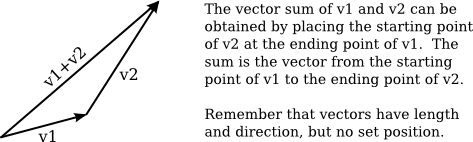
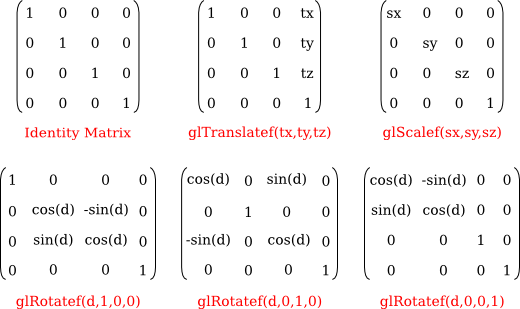

Section 3.5
Some Linear Algebra
Linear algebra is a branch of mathematics that is fundamental to computer graphics. It studies vectors, linear transformations, and matrices. We have already encountered these topics in Subsection 2.3.8 in a two-dimensional context. In this section, we look at them more closely and extend the discussion to three dimensions.
It is not essential that you know the mathematical details that are covered in this section, since they can be handled internally in OpenGL or by software libraries. However, you will need to be familiar with the concepts and the terminology. This is especially true for modern OpenGL, which leaves many of the details up to your programs. Even when you have a software library to handle the details, you still need to know enough to use the library. You might want to skim this section and use it later for reference.
3.5.1 Vectors and Vector Math
A vector is a quantity that has a length and a direction. A vector can be visualized as an arrow, as long as you remember that it is the length and direction of the arrow that are relevant, and that its specific location is irrelevant. Vectors are often used in computer graphics to represent directions, such as the direction from an object to a light source or the direction in which a surface faces. In those cases, we are more interested in the direction of a vector than in its length.
If we visualize a 3D vector V as an arrow starting at the origin, (0,0,0), and ending at a point P, then we can, to a certain extent, identify V with P—at least as long as we remember that an arrow starting at any other point could also be used to represent V. If P has coordinates (a,b,c), we can use the same coordinates for V. When we think of (a,b,c) as a vector, the value of a represents the change in the x-coordinate between the starting point of the arrow and its ending point, b is the change in the y-coordinate, and c is the change in the z-coordinate. For example, the 3D point (x,y,z) = (3,4,5) has the same coordinates as the vector (dx,dy,dz) = (3,4,5). For the point, the coordinates (3,4,5) specify a position in space in the xyz coordinate system. For the vector, the coordinates (3,4,5) specify the change in the x, y, and z coordinates along the vector. If we represent the vector with an arrow that starts at the origin (0,0,0), then the head of the arrow will be at (3,4,5). But we could just as well visualize the vector as an arrow that starts at the point (1,1,1), and in that case the head of the arrow would be at the point (4,5,6).
The distinction between a point and a vector is subtle. For some purposes, the distinction can be ignored; for other purposes, it is important. Often, all that we have is a sequence of numbers, which we can treat as the coordinates of either a vector or a point, whichever is more appropriate in the context.
One of the basic properties of a vector is its length. In terms of its coordinates, the length of a 3D vector (x,y,z) is given by sqrt(x2+y2+z2). (This is just the Pythagorean theorem in three dimensions.) If v is a vector, its length is denoted by |v|. The length of a vector is also called its norm. (We are considering 3D vectors here, but concepts and formulas are similar for other dimensions.)
Vectors of length 1 are particularly important. They are called unit vectors. If v = (x,y,z) is any vector other than (0,0,0), then there is exactly one unit vector that points in the same direction as v. That vector is given by
( x/length, y/length, z/length )
where length is the length of v. Dividing a vector by its length is said to normalize the vector: The result is a unit vector that points in the same direction as the original vector.
Two vectors can be added. Given two vectors v1 = (x1,y1,z1) and v2 = (x2,y2,z2), their sum is defined as
v1 + v2 = ( x1+x2, y1+y2, z1+z2 );
The sum has a geometric meaning:

Multiplication is more complicated. The obvious definition of the product of two vectors, similar to the definition of the sum, does not have geometric meaning and is rarely used. However, there are three kinds of vector multiplication that are used: the scalar product, the dot product, and the cross product.
If v = (x,y,z) is a vector and a is a number, then the scalar product of a and v is defined as
av = ( a*x, a*y, a*z );
Assuming that a is positive and v is not zero, av is a vector that points in the same direction as v, whose length is a times the length of v. If a is negative, av points in the opposite direction from v, and its length is |a| times the length of v. This type of product is called a scalar product because a number like a is also referred to as a "scalar," perhaps because multiplication by a scales v to a new length.
Given two vectors v1 = (x1,y1,z1) and v2 = (x2,y2,z2), the dot product of v1 and v2 is denoted by v1·v2 and is defined by
v1·v2 = x1*x2 + y1*y2 + z1*z2
Note that the dot product is a number, not a vector. The dot product has several very important geometric meanings. First of all, note that the length of a vector v is just the square root of v·v. Furthermore, the dot product of two non-zero vectors v1 and v2 has the property that
cos(angle) = v1·v2 / (|v1|*|v2|)
where angle is the measure of the angle between v1 and v2. In particular, in the case of two unit vectors, whose lengths are 1, the dot product of two unit vectors is simply the cosine of the angle between them. Furthermore, since the cosine of a 90-degree angle is zero, two non-zero vectors are perpendicular if and only if their dot product is zero. Because of these properties, the dot product is particularly important in lighting calculations, where the effect of light shining on a surface depends on the angle that the light makes with the surface.
The scalar product and dot product are defined in any dimension. For vectors in 3D, there is another type of product called the cross product, which also has an important geometric meaning. For vectors v1 = (x1,y1,z1) and v2 = (x2,y2,z2), the cross product of v1 and v2 is denoted v1×v2 and is the vector defined by
v1×v2 = ( y1*z2 - z1*y2, z1*x2 - x1*z2, x1*y2 - y1*x2 )
If v1 and v2 are non-zero vectors, then v1×v2 is zero if and only if v1 and v2 point in the same direction or in exactly opposite directions. Assuming v1×v2 is non-zero, then it is perpendicular both to v1 and to v2; furthermore, the vectors v1, v2, v1×v2 follow the right-hand rule (in a right-handed coordinate system); that is, if you curl the fingers of your right hand from v1 to v2, then your thumb points in the direction of v1×v2. If v1 and v2 are perpendicular unit vectors, then the cross product v1×v2 is also a unit vector, which is perpendicular both to v1 and to v2.
Finally, I will note that given two points P1 = (x1,y1,z1) and P2 = (x2,y2,z2), the difference P2−P1 is defined by
P2 − P1 = ( x2 − x1, y2 − y1, z2 − z1 )
This difference is a vector that can be visualized as an arrow that starts at P1 and ends at P2.
Now, suppose that P1, P2, and P3 are vertices of a polygon. Then the vectors P1−P2 and P3−P2 lie in the plane of the polygon, and so the cross product
(P3−P2) × (P1−P2)
is a vector that is perpendicular to the polygon.

This vector is said to be a normal vector for the polygon. A normal vector of length one is called a unit normal. Unit normals will be important in lighting calculations, and it will be useful to be able to calculate a unit normal for a polygon from its vertices.
3.5.2 Matrices and Transformations
A matrix is just a two-dimensional array of numbers. A matrix with r rows and c columns is said to be an r-by-c matrix. If A and B are matrices, and if the number of columns in A is equal to the number of rows in B, then A and B can be multiplied to give the matrix product AB. If A is an n-by-m matrix and B is an m-by-k matrix, then AB is an n-by-k matrix. In particular, two n-by-n matrices can be multiplied to give another n-by-n matrix.
An n-dimensional vector can be thought of an n-by-1 matrix. If A is an n-by-n matrix and v is a vector in n dimensions, thought of as an n-by-1 matrix, then the product Av is again an n-dimensional vector. The product of a 3-by-3 matrix A and a 3D vector v = (x,y,z) is often displayed like this:

Note that the i-th coordinate in the product Av is simply the dot product of the i-th row of the matrix A and the vector v.
Using this definition of the multiplication of a vector by a matrix, a matrix defines a transformation that can be applied to one vector to yield another vector. Transformations that are defined in this way are linear transformations, and they are the main object of study in linear algebra. A linear transformation L has the properties that for two vectors v and w, L(v+w) = L(v) + L(w), and for a number s, L(sv) = sL(v).
Rotation and scaling are linear transformations, but translation is not a linear transformation. To include translations, we have to widen our view of transformation to include affine transformations. An affine transformation can be defined, roughly, as a linear transformation followed by a translation. Geometrically, an affine transformation is a transformation that preserves parallel lines; that is, if two lines are parallel, then their images under an affine transformation will also be parallel lines. For computer graphics, we are interested in affine transformations in three dimensions. However—by what seems at first to be a very odd trick—we can narrow our view back to the linear by moving into the fourth dimension.
Note first of all that an affine transformation in three dimensions transforms a vector (x1,y1,z1) into a vector (x2,y2,z2) given by formulas
x2 = a1*x1 + a2*y1 + a3*z1 + t1 y2 = b1*x1 + b2*y1 + b3*z1 + t2 z2 = c1*x1 + c2*y1 + c3*z1 + t3
These formulas express a linear transformation given by multiplication by the 3-by-3 matrix

followed by translation by t1 in the x direction, t2 in the y direction and t3 in the z direction. The trick is to replace each three-dimensional vector (x,y,z) with the four-dimensional vector (x,y,z,1), adding a "1" as the fourth coordinate. And instead of the 3-by-3 matrix, we use the 4-by-4 matrix
If the vector (x1,y1,z1,1) is multiplied by this 4-by-4 matrix, the result is precisely the vector (x2,y2,z2,1). That is, instead of applying an affine transformation to the 3D vector (x1,y1,z1), we can apply a linear transformation to the 4D vector (x1,y1,z1,1).
This might seem pointless to you, but nevertheless, that is what is done in OpenGL and other 3D computer graphics systems: An affine transformation is represented as a 4-by-4 matrix in which the bottom row is (0,0,0,1), and a three-dimensional vector is changed into a four dimensional vector by adding a 1 as the final coordinate. The result is that all the affine transformations that are so important in computer graphics can be implemented as multiplication of vectors by matrices.
The identity transformation, which leaves vectors unchanged, corresponds to multiplication by the identity matrix, which has ones along its descending diagonal and zeros elsewhere. The OpenGL function glLoadIdentity() sets the current matrix to be the 4-by-4 identity matrix. An OpenGL transformation function, such as glTranslatef(tx,ty,tz), has the effect of multiplying the current matrix by the 4-by-4 matrix that represents the transformation. Multiplication is on the right; that is, if M is the current matrix and T is the matrix that represents the transformation, then the current matrix will be set to the product matrix MT. For the record, the following illustration shows the identity matrix and the matrices corresponding to various OpenGL transformation functions:

It is even possible to use an arbitrary transformation matrix in OpenGL, using the function glMultMatrixf(T) or glMultMatrixd(T). The parameter, T, is an array of numbers of type float or double, representing a transformation matrix. The array is a one-dimensional array of length 16. The items in the array are the numbers from the transformation matrix, stored in column-major order, that is, the numbers in the fist column, followed by the numbers in the second column, and so on. These functions multiply the current matrix by the matrix T, on the right. You could use them, for example, to implement a shear transform, which is not easy to represent as a sequence of scales, rotations, and translations.
3.5.3 Homogeneous Coordinates
We finish this section with a bit of mathematical detail about the implementation of transformations. There is one common transformation in computer graphics that is not an affine transformation: In the case of a perspective projection, the projection transformation is not affine. In a perspective projection, an object will appear to get smaller as it moves farther away from the viewer, and that is a property that no affine transformation can express, since affine transforms preserve parallel lines and parallel lines will seem to converge in the distance in a perspective projection.
Surprisingly, we can still represent a perspective projection as a 4-by-4 matrix, provided we are willing to stretch our use of coordinates even further than we have already. We have already represented 3D vectors by 4D vectors in which the fourth coordinate is 1. We now allow the fourth coordinate to be anything at all, except for requiring that at least one of the four coordinates is non-zero. When the fourth coordinate, w, is non-zero, we consider the coordinates (x,y,z,w) to represent the three-dimensional vector (x/w,y/w,z/w). Note that this is consistent with our previous usage, since it considers (x,y,z,1) to represent (x,y,z), as before. When the fourth coordinate is zero, there is no corresponding 3D vector, but it is possible to think of (x,y,z,0) as representing a 3D "point at infinity" in the direction of (x,y,z).
Coordinates (x,y,z,w) used in this way are referred to as homogeneous coordinates. If we use homogeneous coordinates, then any 4-by-4 matrix can be used to transform three-dimensional vectors, including matrices whose bottom row is not (0,0,0,1). Among the transformations that can be represented in this way is the projection transformation for a perspective projection. And in fact, this is what OpenGL does internally. It represents all three-dimensional points and vectors using homogeneous coordinates, and it represents all transformations as 4-by-4 matrices. You can even specify vertices using homogeneous coordinates. For example, the command
glVertex4f(x,y,z,w);
with a non-zero value for w, generates the 3D point (x/w,y/w,z/w). Fortunately, you will almost never have to deal with homogeneous coordinates directly. The only real exception to this is that homogeneous coordinates are used, surprisingly, when configuring OpenGL lighting, as we'll see in the next chapter.